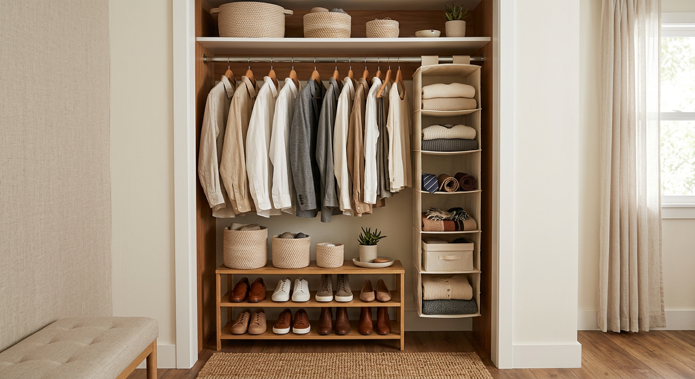
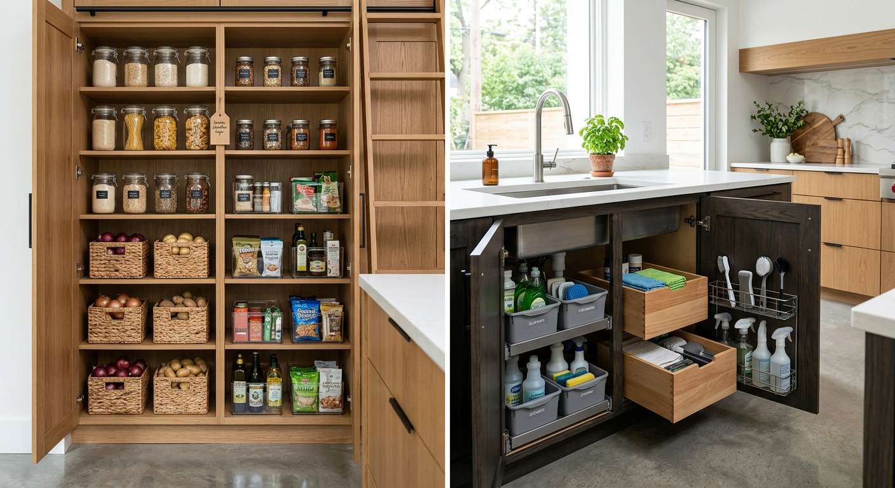
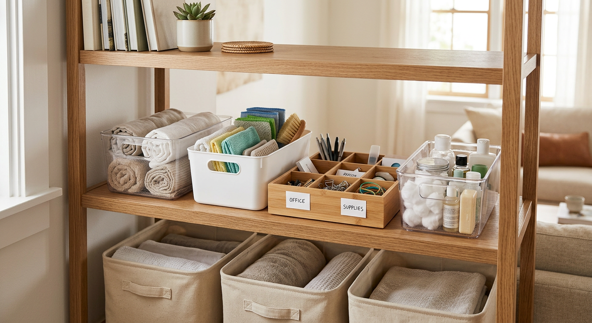

Closet
Best Closet Organizers for Small Spaces
Focused on renters, shared closets, shoe overflow, and vertical storage.
Authority Home Organization Resource

Most people waste money buying random organizers. Start with your exact bottleneck first, then choose the right format.

Focused on renters, shared closets, shoe overflow, and vertical storage.

Covers pantry systems, can racks, lid organizers, and under-sink flow.


Choose the right format by space constraints, effort, and flexibility.
For damp zones (especially under-sink), durable plastic usually lasts the longest with the least maintenance. Powder-coated metal performs well in dry spaces but can rust if coating chips. Bamboo is excellent in dry, styled spaces. Fabric bins are best for lighter, low-moisture storage.
They can over time if exposed to moisture, cleaning chemicals, or chipped finishes. If you choose metal, use coated/rust-resistant options and keep wet zones wiped down.
Bamboo is popular because it looks premium and warm. It works best in dry areas like shelves, vanities, and countertops. For consistently humid zones, plastic is often more durable.
Some do with heavy daily friction. Baskets are best for soft goods (blankets, accessories, paper goods). For heavy tools or frequent grab-and-go items, use rigid bins.
Start where daily friction is highest: closet overflow, pantry clutter, or under-sink chaos. Fix one high-use zone first, then expand.
Measure first, then buy by category and behavior. If you use an item daily, prioritize visibility and easy access. If not, stack and store deeper.
Open bins are faster for frequent access; lidded containers are better for pantry staples, cleaner stacking, and dust control. Most homes need a blend.
Label clearly, keep categories simple, and run short weekly resets. Monthly 15–30 minute tune-ups prevent systems from collapsing.